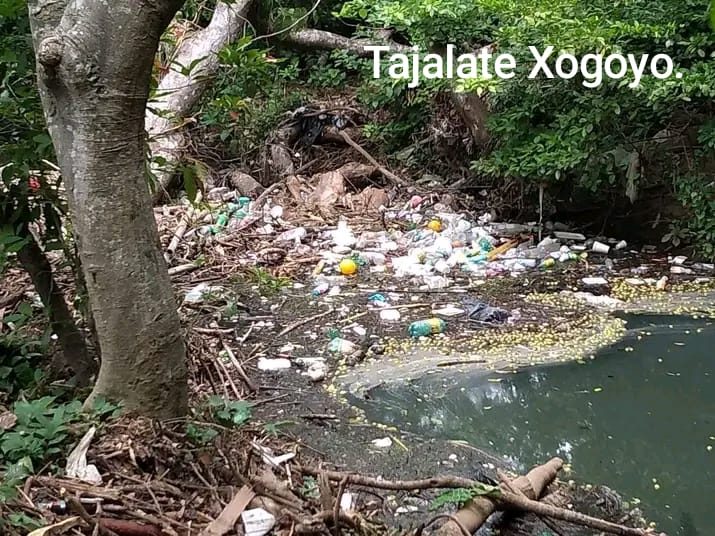
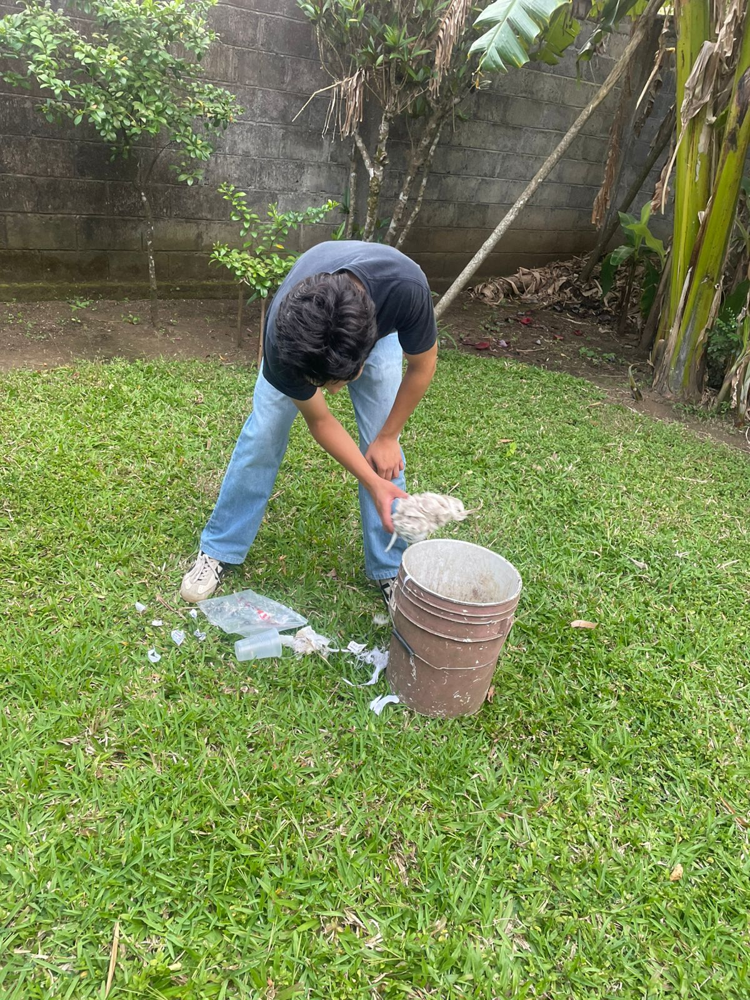
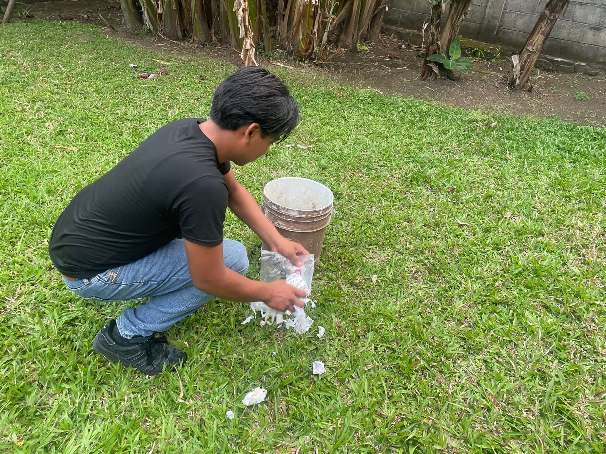

Proyecto Escolar de Cultura Digital II
"En nuestra comunidad de Santiago Tuxtla, el desecho inadecuado de basura, la contaminación de espacios verdes y la falta de reciclaje están dañando nuestro entorno natural. Como estudiantes del Grupo 203, vemos con urgencia la necesidad de cambiar nuestros hábitos diarios para proteger la biodiversidad y la salud de nuestras familias."
"El problema ha avanzado tanto que esta llegando a contaminar cuerpos de agua tales como el arroyo Tajalate el cual inicia desde la Col. Angel Carvajal y atraviesa distintas zonas del municipio importantes para la comunidad hasta incorporarse en el arroyo Sapopan y finalmente desembocando en el Río Tepango, afectando no solo a las personas que habitan los espacios cercanos a el si no además a la fauna que al igual que nosostros tambien habitan y sustentan de estos cuerpos."

Evidencia:Arrollo Tajalate, Barrio Xogoyo .
"Para frenar la contaminación en nuestra comunidad, es necesario pasar de las palabras a la acción mediante la regla de las 3Rs (Reducir, Reutilizar y Reciclar). Si adoptamos estos pilares como hábitos diarios en nuestras casas y en el salón de clases, los alumnos del Grupo 203 podremos disminuir los desechos que afectan nuestro entorno. A continuación, se presentan las acciones clave que podemos iniciar hoy mismo:"
Reducir: Evitemos el uso de plásticos de un solo uso, como bolsas y botellas. Al generar menos basura, aliviamos la carga de los contenedores locales.
Reutilizar: Antes de tirar algo a la basura, piensen si puede tener un segundo uso. Podemos transformar envases viejos en macetas para plantas o contenedores escolares.
Reciclar: Separemos el plástico (PET), el cartón y el aluminio. Llevar estos materiales a centros de acopio evita que terminen contaminando nuestros ríos y calles.
"¡El cambio empieza con nosotros! Te invitamos a sumarte a las jornadas de limpieza escolar y comunitaria. Comparte esta página web con tus amigos y vecinos a través de tus redes sociales (WhatsApp, Facebook o Instagram) para que cada vez seamos más personas cuidando nuestro entorno. "
Las acciones pequeñas como recojer basura de verdad ayudan, CONTRIBUYE AL PLANETA


Presentado por:
Angel Uriel Pérez Flores
Karol Campos Molina
Grupo: 203
Asignatura: Cultura Digital II